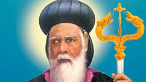

St. Geevarghese Mar Dionysius Vattasseril

Introduction
St. Geevarghese Mar Dionysius Vattasseril, Malankara Metropolitan, was a bright light for the Malankara Orthodox Syrian Church that illumined during her dark and tumultuous times and possessed the vision to bring the Church triumphantly from the bonds of foreign oppression. Thirumeni dedicated his entire life to secure the freedom and welfare of the Holy Church. His Grace faced many troubles and obstacles as well as received constant physical and verbal abuse via threats and physical attacks as he courageously led the Church to her independence. He confronted the dangers and obstacles directly responding with vigor, strength and remarkable conviction and confidence in God's justice and plan, which was a product of his continual fasting and prayer. God protected Thirumeni throughout his life whether in Kerala or abroad as he sought the freedom of the Church from foreign powers. His great triumph lay in the ability to unite the entire Church, both the priests and laymen to follow his lead. He was incredibly gifted in many fields, a multifarious genius. He was a spiritual leader, a theological educator, scholar of languages, literature and traditions. He was a dignified, valorous and noble personality with a remarkable commanding power.
Early Life
St. Dionysius was born to his parents, Joseph Vattasseril of Mallappally and Eliamma Kolathu Kalathil of Kurichy on 31st October 1858. Following his elementary education at C. M. S. Middle School in Mallappally he completed his high school education from C. M. S. High School, Kottayam. In 1876, while still a high school student, he was ordained as a sub deacon by H. H. Moran Mar Pathrose Patriarch.
Life in the Church
Dn. Geevarghese studied at the Orthodox Theological Seminary (Old Seminary or Pazhaya Seminary), Kottayam for four years thereby undergoing his theological training. Dn. Geevarghese soon became a great Syriac scholar under the careful tutelage of St. Gregorios of Parumala, who taught him at Seminary. In 1879 Dn. Geevarghese was ordained as a full deacon and in 1880 he was ordained as a priest by St. Gregorios. By 1880, Fr. Geevarghese had become an authority in the Syriac, Church History, Faith and Doctrine, the Church Fathers, and Theology. In recognition of his incredible expertise in Syriac and theology he was designated as Malankara Malpan. He spent his spare time reading, studying, and thinking which translated to his many renowned writings such as "Doctrines of the Church". He also used his scholarship to edit and publish the order of Church worship to be used by the ordinary faithful for meaningful participation in worship. He was appointed as Principal of M. D. Seminary, Kottayam as he was both a great scholar and administrator. In 1903, he was blessed as a Ramban (monk). He also served as the Manager of Parumala Seminary. In 1908 he was consecrated as H. G. Geevarghese Mar Dionysius Metropolitan and served as the Assistant Malankara Metropolitan. The next year he became the Malankara Metropolitan and served and led the Church in that capacity until his departure from this life in 1934 when he and the Church triumphed in establishing the official constitution of the Malankara Orthodox Syrian Church.
Legacy
H. H. Moran Mar Baselios Geevarghese II Catholicos of blessed memory remarked in the speech at the burial of Vattasseril Thirumeni, "When we look at the highest solemn position held by Vattasseril Thirumeni and his deep and firm faith in God, he seemed similar to Moses who led the sons of Abraham from the captive land of Egypt to the promised land of freedom and happiness. There is no doubt about it. Moses had spent his entire life for the freedom of his people but he could not enter the Promised Land. He was only able to see the Promised Land from a distance. Likewise the Moses of the Malankara Church has also watched the freedom of his Church from a distance". Vattasseril Thirumeni was a good orator who was well aware of the importance of the vitality and moral persuasiveness of words when delivering the speeches to the faithful. Spiritually, he was transformed by Christ and bore no scars from sin. His humility and withdrawal from the praise of this world kept many from seeing the incredibly pious and faithful life that Thirumeni lived. In addition to not publicizing his own spiritual advancement he also avoided spiritual hypocrisy and arrogance throughout his life. Prayers and fasting were the pillars that were Vattasseril Thirumeni's spiritual foundation. He faced all the challenges with the power he had gained through his valued spiritual life. In addition to the liturgical hours of prayer, Thirumeni spent much time in private prayers and silent meditations behind closed doors and away from the attention of people. In spite of his busy schedule, he was also able to focus on three to four lessons from the Holy Bible everyday. Despite Vattasseril Thirumeni's literal application of Christ's instruction to pray in private and not for others to see, many recognized that His Grace was a living saint amongst them.